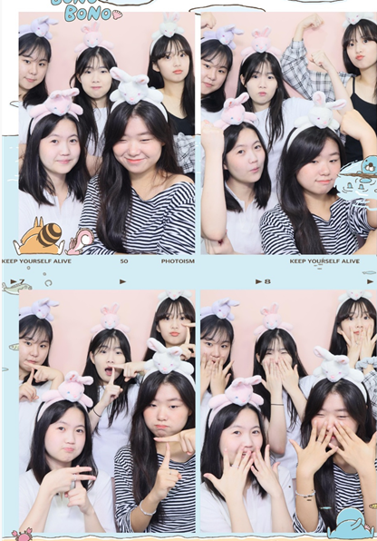

이 웹을 만들게 된 이유는 음.. 해커톤 뭐시기를 나가게 되었기 때문입니다. 웹을 만드는 방법을 배워가면서 점점 이 웹을 완성해 나갈건데 어떤 웹을 만들까 하다가 우리 고딩때 추억을 기록하고 우리만 보는 웹을 만드는게 재밌을 것 같아 아마 그렇게 만들어갈듯합니다 여러분~~~키키. 그니까 뭐 쓰고 싶은거나 사진 뭐 그런거 있으면 알려주세욤 천천히 만들가 가도록 하겠습니다람쥐~~~
